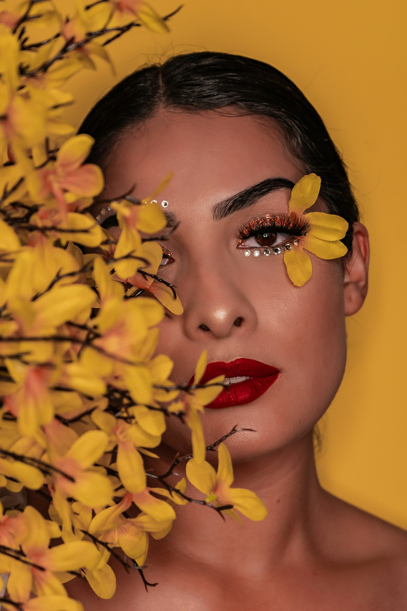

모든 룩 무료 배송
LUMIÈRE
시그니처 룩
마감, 컬러, 무드를 따라 여섯 가지 시각적 방향을 만나보세요. 모든 룩은 출처가 명시된 사진으로 표현한 데모이며, 관련 제품과 함께 제안됩니다.
피부처럼 밀착된 마무리와 은은한 광택.
황혼의 빛을 담은 따뜻한 코퍼와 골드.

깔끔하게 조각한 베이스 위의 강렬한 레드 립.
촉촉한 민무늬 광채와 틴티드 립.
깊이 번제한 차콜 스모키와 차분한 립.
잡지 표지를 위한 대비 강한 스테이트먼트 룩.
대화를 시작해 보세요
콜라보레이션, 프레스, 그리고 새로운 가능성을 기다립니다.
다시 하고 싶은 메이크업 룩.
 룩
룩